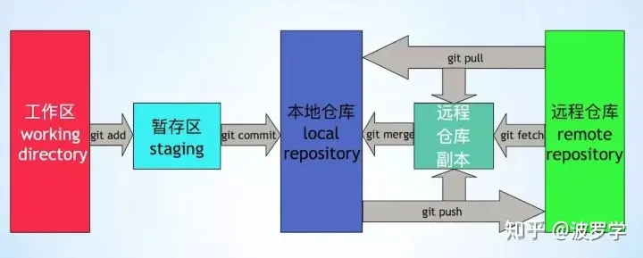

1. 目录：
2. 结构

参考： https://www.zhihu.com/question/38305012
可见：
fech获取时，并未合并到本地仓库
--------> 推论：cherry-pick需要的commiId，可以利用fech获取
3. git
git reflog -----------历史上所有的commit（即使被删除了、即使被修改了）
记录了所有引起HEAD指针变化的原因：真正commit、或reset、或checkout 或 pull 或 merge 或 clone
如何读reflog？
（1）新增一笔提交 7ace9e6282a9
（2）reset: moving to 4bd4cf2ac7dd （
自然from 7ace9e6282a）（3）cherry-pick test 节点（
自然，形成新节点）

范围：

参考： https://www.jianshu.com/p/7e4cef3863e7
git commit 技巧：
git commit --amend --no-edit -----> 不会弹出commit message (reusing the previous one)
在 bash中自定义 见《任意ide（As 或 clion 等）, 默认 Terminal 如何使用 bash?》
//.myfunction.sh
#!/bin/bash
#git_rebase
function g_pu0 {
export a=$(git rev-parse --abbrev-ref HEAD) #
git.exe push --progress "origin" $a:$a #注意第一个a是本地分支名，第二个是远程分支名: feature/xa_powerterminal:feature/xa_power
}
function g_pul {
export a=$(git rev-parse --abbrev-ref HEAD)
git.exe push --force-with-lease --progress "origin" $a:$a
}
function g_re_f{
#获得某个分支所对应的远程分支
export a=$(git rev-parse --abbrev-ref --symbolic-full-name @{u})
git.exe fetch -v --progress "origin"
git clean -d -fx
#git fetch --all
git reset --hard HEAD~5 #仓有问题的话,有垃圾文件,直接 rebase 远端,可能会冲突。先 reset 本地--->强制
git reset --hard $a #仓有问题的话,有垃圾文件,直接 rebase 远端,可能会冲突。先 reset 本地--->强制 rebase
remotesBranch="remotes/"$a #shell拼接字符串
git rebase $remotesBranch
}
function g_re{
#获得某个分支所对应的远程分支
#git fetch --all
git.exe fetch -v --progress "origin"
export a=$(git rev-parse --abbrev-ref --symbolic-full-name @ {u}) git rebase $remotesBranch
remotesBranch="remotes/"$a
git rebase $remotesBranch
}
function g_co{
git commit -m "修改"
}
function g_he{
echo "git.exe fetch -v --progress "origin""
echo "git log-graph"
echo ": git rev-parse --abbrev-ref--symbolic-full-name @{u}"
echo "dos2unix unix2dos filename"
echo "删除 git 没有track的文件:git clean -d -fx"
echo "git checkout -b feature/master_enterprise2 remotes/origin/master"
echo "推送： git push -u origin feature/master_local:main -f; 本地分支：远程分支获取：git branch -a"
echo "=========commit==============="
echo "git commit -m "TraceNo.:REQ20220“"
echo "git commit --amend --no-edit -----> 不会弹出commit message (reusing the previous one)"
echo "删除某个commit: git rebase -i 9fd15a8880fc41290d7dc^ 修改pick为drop"
echo " commit: git rebase -i HEAD~4 s"
echo "任意调整 commit顺序、任意合并: git rebase -i commitID,id之后的所有commit"
}
function g_st {
git status
}
function g_fe {
git fetch
}
function g_co_am {
git commit --amend
}
总结:
git restore 文件名
会撤销到缓存区(如果有,add区域) 或者 当前版本库版本(commit区)
git命令回退 某个文件 到指定的版本：
git chekcout 版本号 文件
如何合并？TODO
git大文件：
git Ifs pull // 下载大文件
git lfs uninstall
管理:
硬件十几个人对软件一个人,提十几个单,修改txt
----------> 应该让硬件出一个人,软件只对接这个一个人。硬件单提一个
3.1. 两个节点之间差异 git diff
git diff 8064cff987043e2272746a46e3240e4ea7336e5b 3e62c71ee5dd6c714fc0bdeaa7faf0a2aa226e91 > /1111.txt
前一个commitID 后一个commitID
两个节点之间差异, 提取所有文件名:
git diff 8064cff987043e2272746a46e3240e4ea7336e5b 3e62c71ee5dd6c714fc0bdeaa7faf0a2aa226e91 --name-only >./1111.txt
3.2. 技巧：用git diff 或者 git patch作为代码的持久化存储
如何保留自己的需求修改？
法一：保留需求设计 & ppt
法二：保留 diff文件（极优） ---------> （1）很容易复原 （2）diff文件很小
3.3. 持久化 & 传递信息 -----> git patch
apply patch：
git apply --stat 0001-CR-double-RIES-3190.patch git apply --check 0001-CR-double-RIES-3190.patch git am --signoff 0001-CR-double-RIES-3190.patch
生成patch：
//生成从当前commit往前x个commit的patch文件 git format-patch -x //生成从指定commit_id(包含该commit) 往前x个commit的patch文件 git format-patch commit_id -x // git format-patch \\<start-commit\\>..\\<end-commit\\>
参考：
如何使用git 生成patch 和打入patch-腾讯云开发者社区-腾讯云 https://cloud.tencent.com/developer/article/2109416
其他：
https://www.jianshu.com/p/b6d7c13d8e40 git patch相关命令收集
3.3.1. git apply部分失败
失败，一般只是失败一部分
--------> 在0001-CR-double-RIES-3190.patch文件中手动删掉PhoneWindowManager，后面手动同步
3.3.2. 技巧：可以直接用txt 看.patch文件
很nice
可以手动修改patch --------> 手动修改后，还可以apply
3.4. 用tag替代commitID -----> git tag
git tag查看所有tag
https://blog.csdn.net/newbeixue/article/details/125919492
1、加tag：
2、使用tag替代 commitid ----------> tag是人语；commitid 是机器语
3.5. 本地有代码修改，如何 rebase 主干(或其他分支):
方法一: 新建一个分支(可行):
git fetch (必须把远端的拉下来)
git checkout -b feature/sh_c111111_x214 remotes/origin/master
pick之前分支的修改
git fetch (把远端的拉下来,本质: 拉到本地,但是没有合入到本地, git log 不变---》git fetch 对代码没有任何影响)
git rebase origin/master (当前分支的base,同步到本地的 origin/master)
验证:git log, 代码跟新到新, 而且自己的 commit 在第一个
方法三: 命令的小乌龟界面操作:
拉取+小乌龟界面rebase (找到 head origin,右键 rebase)
3.6. git pull
fetch + merge 或 fetch + rebase
查看远端log:
git fetch
git log remotes/origin/master
3.7. cherry-pick：
git cherry-pick 015e60603883 0caa747eeccae2c
start end
3.8. git checkout
保留合并分支代码：--------- 解决冲突
git checkout --theirs RendererJNI.cpp
3.9. git status + path
比如：git status ./
3.10. git push
提交代码：
git push -u --progress "origin" 本地分支:远程分支
本地分支:远程分支 由 git branch -a 查得
-f 强制push
注意：
没有本地分支时（安卓开发中多见），提交代码：
git push origin HEAD:refs/for/branch_master
----》以HEAD替代本地分支？
3.11. 配置git + 查看已经配置
参考： https://blog.csdn.net/lovedingd/article/details/121288974
主要配置有：
1、user.name、user.email
2、proxy配置
查看配置：
1、git config --list
2、 .gitconfig文件
3.12. 技巧：git管理之 建立本地git
技巧： 当本地文件夹 没有git时，可以自己创建git 仓库管理
git init
参考：
https://blog.csdn.net/qq_33254766/article/details/114095922 本地创建一个 Git 仓库
---------------------> 技巧： 想要保存两个git仓的改动diff ，可以在公共根路径上创建自己的git仓库
3.13. win下任意目录文件，都可以纳入git版本管理
方法： 本地git + Git Bash Here(win下)
应用：
win本地的 应用apk的代码 -----> 好处，改应用代码有时候会改崩了
写的论文
md文件
git精髓在于： 验证ok的修改 ------> 形成一个commit
（1）前进很踏实
（2）可以快速回退到很久之前的节点
规定：
本地写demo，重要节点，也git commit
3.14. .gitignore
作用：
忽略：
指定文件/文件夹不被 git跟踪 ---------> 表现：git status 看不到改动
应用场景：
场景一： 自然，不想被跟踪部分文件
场景二：git 嵌套仓
// .gitignore /AOSP------> AOSP是底层嵌套的git仓，自然上层要忽略掉
场景一，举例子：
git status 或者 git add . 不被加入？？？
只保留 5.27.4-r0/kwin-5.27.4/src 这个路径：
/5.27.4-r0/* （忽略的文件） !/5.27.4-r0/kwin-5.27.4 （保留的文件） ------》 与 /5.27.4-r0/* 成对 /5.27.4-r0/kwin-5.27.4/* !5.27.4-r0/kwin-5.27.4/src ------》 与 /5.27.4-r0/kwin-5.27.4/* 成对 git add .gitignore git commit -m ".gitignore"---------------> 验证OK！
参考： https://blog.csdn.net/qq372848728/article/details/56709919 -------------> 好文，验证ok
https://blog.csdn.net/harryptter/article/details/133295773
https://blog.csdn.net/xuxu_123_/article/details/131710549 【问题分析解决】git添加.gitignore后不生效问题
3.15. 修改commit --amend时，用vim
git config --global core.editor vim
3.16. git冲突
git【--ours】及【--theirs】优雅的解决冲突git checkout --theirs老张家的独苗的博客-CSDN博客
3.17. 一些写好的脚本
// .mac_push.sh
#/bin/zsh
~/.bin/repo sync
~/.bin/repo forall -c "git status"
~/.bin/repo forall -c "git add . "
~/.bin/repo forall -c "git commit -s -m 'commit by tools update' "
~/.bin/repo forall -c "git push origin HEAD:master"
git add -u
git commit -s -m 'commit by tools update'
git push origin HEAD:master
3.18. 生成SSH key
解决报错：error [SSL: CERTIFICATE_VERIFY_FAILED]
linux 与 GitHub 或者 gerrite通信 协议
参考： 如何生成SSH key？_ssh key生成-CSDN博客
-----> 注意：在其他人的服务器和账号下，也可以添加自己的ssh key。然后下载代码
3.19. 报错
3.19.1. 关于git push 443链接 报错：
fatal: unable to access 'https://github.com/KentTJ/-book.git/': Recv failure: Connection was reset
或
fatal: unable to access 'https://github.com/KentTJ/-book.git/': Failed to connect to github.com port 443

参考：
git config --global http.proxy http://127.0.0.1:7890
git config --global https.proxy http://127.0.0.1:7890
3.19.2. git bash 不支持中文时
$ git status
modified: README.md
modified: "344\\270\\252\\344\\272\\272\\344\\273\\213\\347\\273\\215/\\345\\220\\264\\346\\227\\245\\346\\225\\217.md"
办法：
git config --global core.quotepath false
参考：https://blog.csdn.net/m0_46104251/article/details/127411854
3.19.3. 重装系统导致的certificate 找不到
fatal: unable to access 'https://github.com/KentTJ/-book.git/': error setting certificate file: E:/programFiles/Git/mingw64/etc/ssl/certs/ca-bundle.crt
3.19.4. 问题：chmod之后，git status显示修改了大量文件（并不是自己修改的文件）
办法： 忽略filemode
git config --add core.filemode false--------> 验证有效
4. 参考：
5. repo的安装
报错：
$ repo init -u git@e.coding.byd.com:dlc/bos/repo.git
bash: repo: command not found
------------->
安装：
https://stackoverflow.com/questions/3682083/repo-command-not-found
mkdir ~/bin PATH=~/bin:$PATH curl <https://storage.googleapis.com/git-repo-downloads/repo> > ~/bin/repo chmod a+x ~/bin/repo
报错：
$ repo init -u
dlc/bos/repo.git File "C:/Users/chen.jinke/bin/repo", line 51 def print(self, *args, **kwargs): ^ SyntaxError: invalid syntax
确认：
$ which python /c/myProgramFiles/Python27/python
修改默认python：
(1) 对于linux：
sudo ln -s /usr/bin/python3 /usr/bin/python（2）对于windows：
修改环境变量PATH
6. github
6.1. create a new repository on the command line、
echo "# aosp10" >> README.md
git init
git add README.md
git commit -m "first commit"
git branch -M main // 修改当前分支为main分支
git remote add origin https://github.com/KentTJ/aosp10.git
git push -u origin main
6.2. push an existing repository from the command line
git remote add origin https://github.com/KentTJ/aosp10.git
git branch -M main
git push -u origin main
6.3. GitHub
1、git push 到gitHub失败：
方法：无需关闭代理 git config --global http.proxy ""
注意：上述方法，网页访问速度没有改善 ----》技巧：用手机看网页
6.4. 规定
所有的笔记，在线化
所有的项目demo，在线化
----------------------> 容易获取，才不会消耗心力！！！！！！！！（容易，但是高频的事情，也会消耗大量心力）